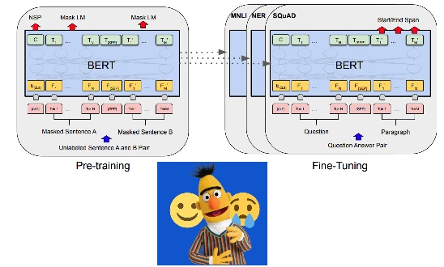
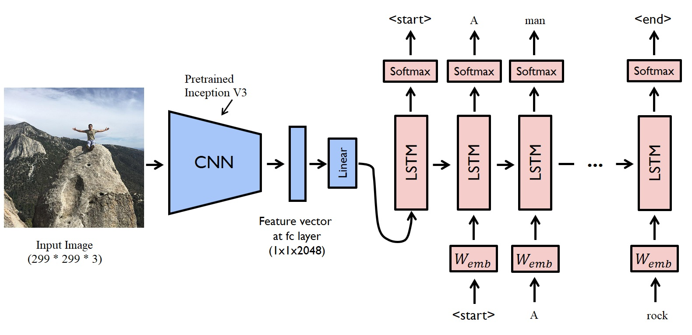
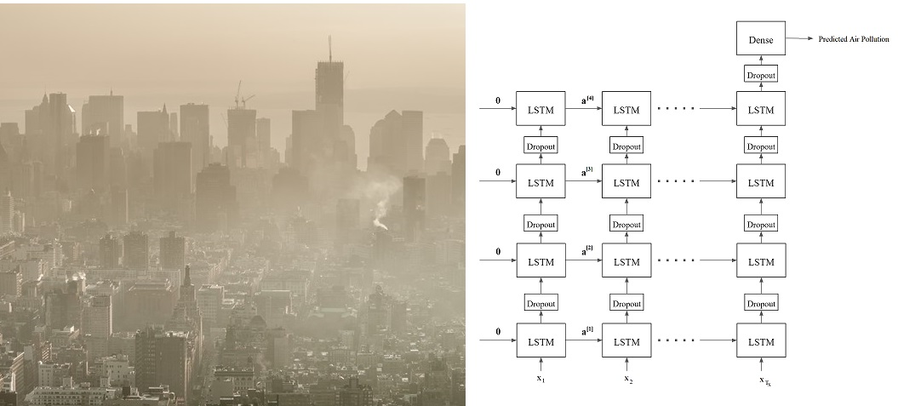

Heart Stroke Prediction
Using Random Forest
target="_blank" rel="noopener noreferrer"
A Random Forest Classifier with 150 trees and entropy criterion is used to predict how likely is a patient will have a heart stroke. A GridSearch CV used to fine tune the hyperparameters.
Synthetic Minority Oversampling Technique (SMOTE) approach was used to address the imbalanced datasets. The model with best accuracy was deployed into production using streamlit.
Please check out the web application at the link below.
Airfoil self-noise
prediction Using XGBOOST

The acoustic noise generated by an airplane wing is a function of frequency, angle of attack, velocity and chord length. In this study, I use XGBoost regressor
to predict the aerodynamics noise generated by an airfoil. After fine tuning the hyperparameters of the model using GridSearch CV, model with best MAE was deployed
into production using streamlit. Please check out the web application at the link below.
Sentiment Analysis
Using BERT

This sentiment analysis web application uses Bidirectional Encoder Representations from Transformers (BERT) base model with 12 transformer blocks,
768 hidden size, and 12 self-attention heads. This leads to a total of 110M parameters. A dropout and Dense layer was added using PyTorch to the base model to do the task of sentiment analysis.
Model was fine-tuned on 1.6M tweets available in the this Kaggle dataset. Docker was used to
containerize the model and model container was deployed on an AWS EC2 instance. A demo of deployed model can be found at the source code!
Image Captioning Using Transfer Learning
and LSTM

In this project, I use an encoder-decoder architecture using TensorFlow deep learning framework to generate a description (caption) for an given image.
The image encoder is a convolutional neural network (CNN). Instead of training this CNN network from initial weights, transfer learning (InceptionV3 model) is used to vectorized the given images.
The decoder is a long short-term memory (LSTM) network. Also, I use pre-trained GloVe word embeddings for the embedding layer. Please check out the source code at my Github.
Air Pollution Forecasting
Using LSTM

In this project, I use a deep long short-term memory (LSTM) network in Keras to forecast air pollution in Beijing. This study uses 2018 KDD CUP meteorological and air quality data.
Four LSTM layers are used and after each LSTM layer a Dropout layer is used to avoid overfitting. For each LSTM layer, 144 sequence (previous time steps) is considered. This means we predict the air pollution hourly using the data of 6 last days (6 days * 24 hours = 144 hours).
Please check out the source code at my Github.